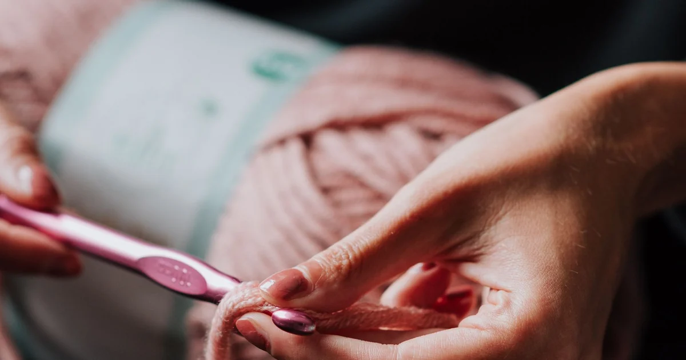
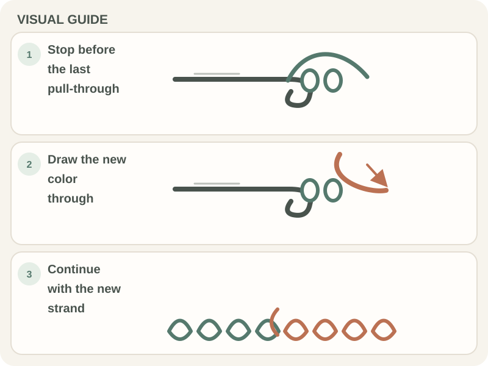
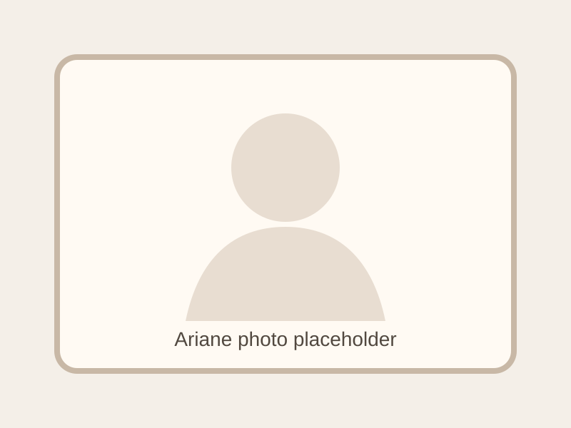

Stitches & Techniques · Beginner guide
How to Change Colors in Crochet
Switch colors at the final pull-through of a stitch so the new shade forms the top of the next stitch.

A clean color change is often prepared before the old-color stitch is fully finished. The unused strand should not pull the fabric inward.
Before you begin
Keep both colors accessible and check whether the pattern says to carry the unused yarn or fasten it off. Long carries can show or affect stretch.
Step-by-step instructions
- Work the stitch before the change until its final yarn-over and pull-through remain.
- Drop the old color and use the new color for that final pull-through; the new shade reaches the stitch top.
- Continue in the new color, keeping the join snug but not puckered.
- For a short span, use the pattern’s carry method; for a longer span, fastening off and rejoining may avoid a loose float.

What to check
Change at the stitch top
Inspect both sides. The boundary should sit at the intended stitch, and any carried strand should not draw the fabric inward.
Frequently asked questions
Should I cut the old yarn every time?
Not necessarily. The pattern may ask you to carry it, float it, or fasten off. Distance and fabric matter.
Why does the old color peek through?
The change may have happened after the stitch was complete. Try using the new shade for the final pull-through.
How do I avoid a visible jog when changing colors in a round?
Follow the pattern’s round-join or color-change method. The final pull-through may place the new color, but the join itself can still create a step.
Should I carry the unused color along the row?
Follow the pattern. Carrying can work across a short distance, but a long float may show through or affect stretch. Fasten off or rejoin when the pattern calls for it.
Plan the change before the stitch is complete
For many stitch patterns, the new color is drawn through the final loops of the stitch before the color change. That places the new shade at the top of the preceding stitch, ready for the next one. The pattern may specify a different point, especially at a round join or motif boundary. Keep both strands available before you begin that final pull-through so the active loop does not become loose while you switch.
Carry, float, or fasten off based on the span
Carrying the unused strand inside stitches can reduce ends, but it may show through a light or open fabric. A float across the back can catch fingers or limit stretch if it is too tight. Fastening off and rejoining leaves more ends to weave in but may suit a longer distance or a visible section. Test the pattern’s chosen method on a small swatch and check both sides. Do not pull the carried yarn tight; the fabric needs room to flex.
Plan the change at the row or round boundary
A stripe that starts at a side edge may show a step where the rows meet. In joined rounds, the join and starting chain can create a small jog even when the color changes on the final pull-through. Some patterns include a jogless transition or a specific joining method. Follow those instructions rather than moving the color change to an arbitrary stitch. Check a short sample from the front and back before repeating the stripe across a project.
Manage unused yarn without tightening the fabric
When carrying a color behind the work, leave enough slack for the fabric to open at its normal width. A taut strand can pucker the edge or make the reverse side uncomfortable; a very loose float can snag. For a long color gap, compare carrying, floating, or fastening off according to the pattern and the project’s use. A reversible item may need a neater wrong side than a piece with a hidden interior.
Secure the color tails after the transition
Changing color creates ends that need finishing unless the pattern carries the yarn. Leave enough tail for the chosen securing method and keep it from crossing the next stitches while you work. After a few stitches in the new shade, check that the boundary is in the intended place and that neither strand pulls the fabric inward. Weave tails in after the color section is complete if that makes the wrong side easier to manage. Follow the pattern and fiber care notes when finishing a washable item.
Common mistakes and how to fix them
- Changing color after completing the stitch. The old color can remain at the top. For a clean transition, many patterns use the new color on the final pull-through.
- Pulling a carried strand too tight. The fabric puckers and loses stretch. Leave enough slack for the row or round to open naturally.
- Leaving a long float exposed. It can catch or show on the wrong side. Use the pattern’s carry or fastening method for that distance.
Tips that make it easier
- Set the new yarn within reach before the final pull-through.
- Check the front and back after the first color change in a repeat.
- Leave tails long enough for the finishing method, then weave them in after checking the fabric.
A useful next step
Check the pattern’s instructions against a short sample before continuing, then follow its stated stitch and edge rules.
